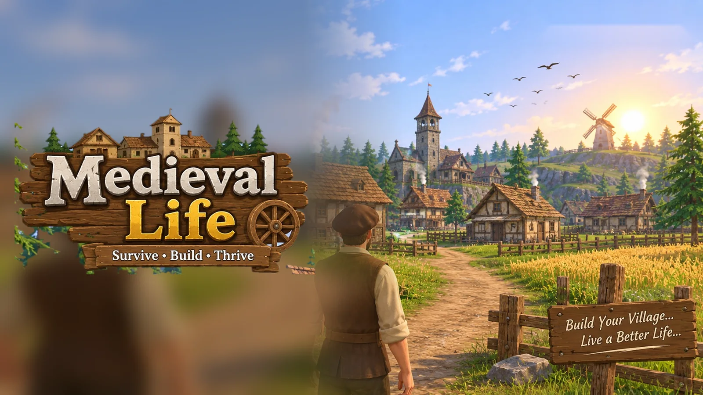

Carve out your own medieval life
Medieval Life is a first-person survival game set in a living medieval world. You start with almost nothing: chop pine trees for wood, mine rocks for stone and gather sticks and berries to stay alive. Craft an axe, a hammer, a bow and arrows, and turn raw materials into a home.
With your hammer you lay foundations, raise walls and build shelters, then grow a wooden house stage by stage until it stands tall. Keep your hunger up and your health with it: track deer through the forest, bring them down with your bow and cook the meat over your campfire.
Beyond your camp lies an open world of roads, rivers and hills. Visit walled and riverside villages where villagers go about their work, ride your horse across the countryside and watch the world change as day turns to night and lanterns light the streets.
Gameplay screenshots
Real in-game screenshots from the Android version. Tap any image to view it full size.
Main features
First-person open world
Explore forests, hills, rivers and roads through your own eyes, with a minimap and world map to guide you.
Build your village
Place foundations, walls and shelters, then raise a wooden house stage by stage and add storage chests.
Gather & craft
Chop trees, mine stone and collect sticks and berries, then craft tools, a bow and arrows.
Survive
Manage hunger and health, hunt deer with your bow and cook meat over the campfire.
Horse riding
Saddle up and ride across the countryside between villages.
Day & night
A living world with a day-night cycle, seasons and an in-game clock; villages glow with lanterns after dark.
System requirements
| Platform | Android phones and tablets |
|---|---|
| Graphics | Low / Medium / High presets, built to run on budget phones |
| Controls | Touch controls: joystick, look-drag and action buttons |
| Minimum Android version | To be announced |
| Memory (RAM) | To be announced |
| Storage | To be announced |
| Internet | To be announced |
Credits
Medieval Life uses these 3D models under the Creative Commons Attribution 4.0 licence (CC BY 4.0). Thank you to their creators.
- "Fuse Civilian 1" by Leonardo Carvalho
- "Pine Forest at Sunset" by Jagobo
- "Medieval Bow and Arrow" by Ugur Yakisik
- "Low poly grass pack" by Nicothin
- "FREE - SkyBox Basic Sky" by Paul
- "Realistic Deer" by pighunt3r15
- "Small Stones" by CR!STALLL
- "Sticks" by Guy in a Poncho
- "Primitive Stone Hammer" by azripxd
- "Axe stylized psx/ps1" by martlab
Font: Cinzel (SIL Open Font License).